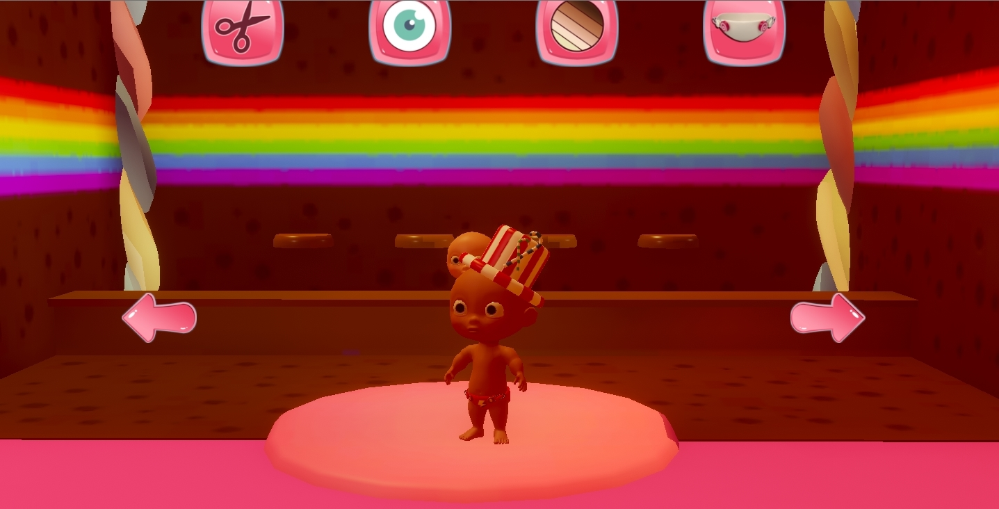
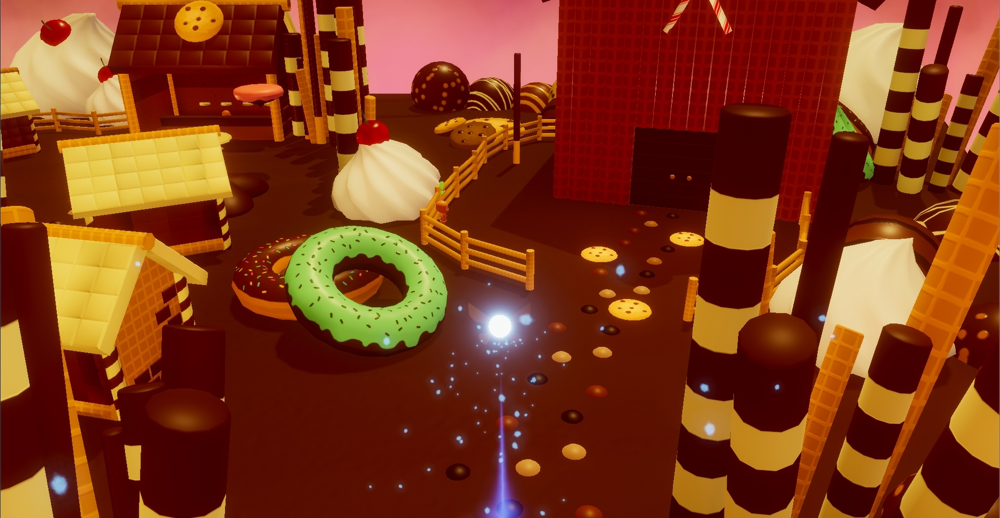

The Project itself
Baby Boom is a game that tells the story of a baby in pursuit of his beloved toy. The player starts by waking up in what seems like a dream world made out of candy. There are other babies which all seem to require help of you which will be the main quests. The player progresses throughout the level by completing quests and exploring the land to find hidden passages and keys to gain access to the next island filled with content. To give the player a more freedom in creativity we also added a feature to customize each player's character with different cosmetics.
My contribution to the project
- Modular quest system
- VFX
- Companion
- Cutscenes
- Optimization
Modular quest system
To add content to our game we decided to go with a quest system that is similar to World of Warcraft's system. Since we only had 8 weeks for the project, we wanted to make good use of our time creating content. This is why me and my teammate came up with a modular quest system. This system would feature nearly every variable required to create a wide variety of quests. Additional quests can simply be made by creating a new quest specific script, this would inherit from the master class to gain easy access to all variables. Quest specific variables can easily be added in the new script which allows for easy quest making.
VFX
For this project I volunteered to work on the visual effects. My experience in visual effects allowed me to create some fitting particle systems for the game which really enhance the overall experience.
Companion
In our concepting phase, we decided that the game needs a mechanic to make it unique compared to other similar games. We decided that adding a companion to the game and also using him to complete certain parts of quests would enhance our overall gameplay. The companion also opened the possibility for tutorials or help whenever the player was stuck. I was assigned the job of making the companion from scratch. I started by making the companion itself. The companion consists out of animated wings and a multi-layered particlesystem. The controller and camera felt good according to our playtesters. Next was the interaction with the player. We needed a simple way for the player to call upon the companion if he or she was stuck. We made a bunch of dialogue to assist the player with quests which proved to be very helpfull.
Cutscenes
Just like the quest system. We wanted to save time on our cutscenes. This is why we made a modular cutscene manager, allowing every member of the project to be able to quickly make great cutscenes featuring a cinematic camera, timed events and dialogue.
Optimization
Because the project was so big, there were some serious performance issues at first. I went over the optimization part of our project. I did alot of research on how to properly optimize your game. In the end we ended up quadrupling our framerate on our target platform boosting the game to a solid 120+ FPS.